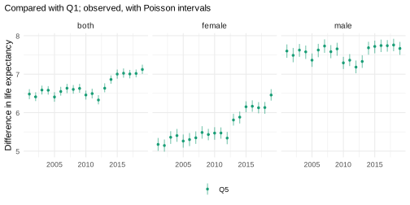
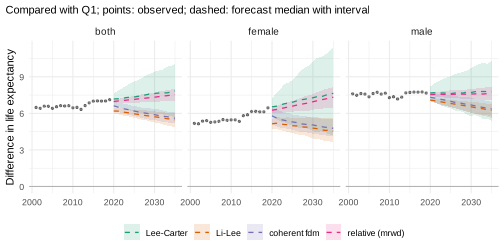
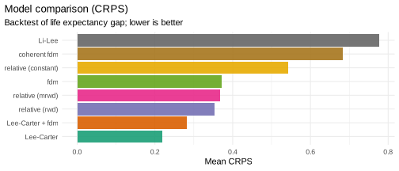
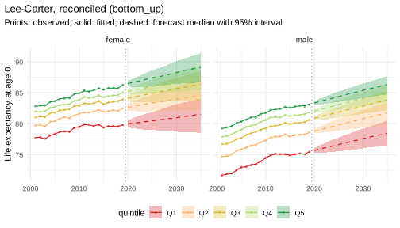
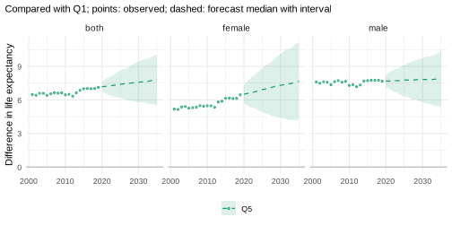
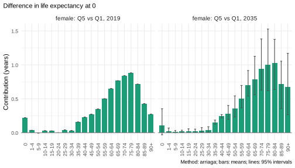
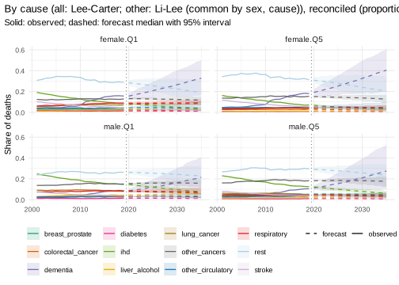
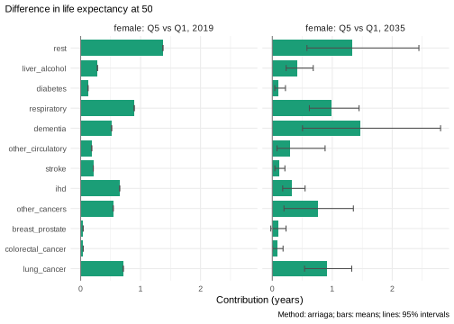

Inequality in England: life expectancy and causes of death by deprivation
Source:vignettes/inequality-england.Rmd
inequality-england.RmdThis vignette is precomputed
(dev/precompute-vignettes.R) because its backtests take
several minutes.
How large will the gap in life expectancy between the least and the most deprived areas of England be in 2035, and which causes of death will make it up? A forecast of a gap is more than two forecasts: it depends on how the forecasts of the groups move relative to each other. This vignette builds a pipeline in which every step is chosen in a backtest of the quantity the question is about, the gap. Each step refers to the vignette that explains it.
Data
Deaths and mid-year populations by sex, 5-year age group and decile
of the Index of Multiple Deprivation, England 2001-2019
(ons_data; Source: Office for National Statistics, Open
Government Licence v3.0), combined into quintiles (Q1 most deprived, Q5
least deprived):
x <- mt_data(deaths = ons_data, population = ons_data, by = c("sex", "imd_decile"), age = "age_group",
value = c(deaths = "all_causes", population = "population"))
x <- mt_as_exposure(x, type = "midyear")
x <- mt_group_levels(x, "imd_decile", function(d) paste0("Q", ceiling(as.numeric(d) / 2)), name = "quintile")
mt_validate(x)
#> <mt_validation> no findingsThe hierarchy. The ten series of sex by quintile add
up to England and to both sexes. All forecasts below are made for the
ten series and summed (reconciled(method = "bottom_up")),
so that England is the sum of its quintiles in every path (“Coherent
forecasts: totals and their parts”):
h <- mt_hierarchy(sex = "both", quintile = list(total = "England"))
xa <- mt_aggregate_strata(x, h)
bu <- function(model) reconciled(model, h, method = "bottom_up")The observed gap in life expectancy at birth between Q5 and Q1:
gap_obs <- mt_contrast(xa, var = "quintile", ref = "Q1")
mt_plot_contrast(observed = gap_obs, levels = "Q5")
For women the gap widened from about 5.2 years in 2001 to 6.5 years in 2019, most of it after 2011. For men it stayed at about 7.5 years, with a dip around 2010.
Part 1: the gap in life expectancy
What the models assume about the gap
The candidates differ in how the quintiles may move relative to each other (“Choosing and combining models”):
- Lee-Carter and the functional demographic model (fdm), fitted to each quintile separately: each quintile continues its own trend, so a gap that widened keeps widening;
- Li-Lee and the coherent fdm (product-ratio method): the quintiles of each sex share a common trend, and their deviations from it are stationary, so gaps return towards their past level;
- the relative model of Villegas and Haberman (2014),
with England as the reference population
(
relative_model()): England has a Lee-Carter model, and the log death rates of each quintile are those of England plus an age pattern of level differences and a common age pattern times the quintile’s index of improvement differences to England. The quintiles share England’s trend. What the model assumes about the gap lies in the forecast of these indexes (deviation), with the paper’s model and the two alternatives the paper compares it with:-
"mrwd"(the paper’s model): a multivariate random walk with drift. The improvement differences continue as in the past, so a gap that widened keeps widening; the innovations of the quintiles are correlated, which makes the gap more certain than independent forecasts of the quintiles would; -
"rwd": independent random walks with the same drifts. Each quintile has the same forecast as with"mrwd", and the gap a wider interval; -
"constant": the indexes stay at their values of the last year. Every quintile improves as England does and keeps its ratio to England’s rates at each age: only the level differences remain;
-
- an ensemble of Lee-Carter and fdm.
The relative model is fitted to the ten series and England jointly;
with reconciled(), England’s forecast is again the sum of
its quintiles. The gap between Q5 and Q1 forecast by four of the
models:
rel <- function(deviation) {
bu(relative_model(reference = list(quintile = "England"), by = "sex", deviation = deviation))
}
cand <- list("Lee-Carter" = bu(lee_carter()), "fdm" = bu(hyndman_ullah()),
"Li-Lee" = bu(li_lee(common_by = "sex")), "coherent fdm" = bu(coherent_fdm(common_by = "sex")),
"relative (mrwd)" = rel("mrwd"), "relative (rwd)" = rel("rwd"), "relative (constant)" = rel("constant"),
"Lee-Carter + fdm" = bu(ensemble(lc = lee_carter(), fdm = hyndman_ullah())))
fits <- lapply(cand[c("Lee-Carter", "Li-Lee", "coherent fdm", "relative (mrwd)", "relative (rwd)",
"relative (constant)")], mt_fit, data = xa)
fcs <- lapply(fits, mt_forecast, to = 2035, n_draws = 500, seed = 1)
gaps <- lapply(fcs, mt_contrast, var = "quintile", ref = "Q1", at = 0)
mt_plot_contrast(gaps[c("Lee-Carter", "Li-Lee", "coherent fdm", "relative (mrwd)")], observed = gap_obs,
levels = "Q5")
The gap in 2019, observed and as fitted by each model (the start of its forecast, “Where a forecast starts: the jump-off”), and its forecast for 2020 (median) and 2035 (median and 95% interval):
q5_q1 <- function(v, q) v[q == "Q5"] - v[q == "Q1"]
start <- rbindlist(lapply(fcs, function(f) {
mt_jump_off(f)[sex != "both", .(observed_2019 = q5_q1(observed, quintile), fitted_2019 = q5_q1(fitted, quintile)),
by = sex]
}), idcol = "model")
gap_q5 <- rbindlist(gaps, idcol = "model")[level == "Q5" & sex != "both"]
end <- gap_q5[, .(forecast_2020 = q0.5[period == 2020],
forecast_2035 = sprintf("%.1f (%.1f-%.1f)", q0.5, q0.025, q0.975)[period == 2035]), by = .(model, sex)]
merge(start, end, by = c("model", "sex"), sort = FALSE)[, lapply(.SD, function(v) if (is.numeric(v)) round(v, 2) else v)]
#> model sex observed_2019 fitted_2019 forecast_2020
#> 1: Lee-Carter female 6.46 6.45 6.54
#> 2: Lee-Carter male 7.66 7.67 7.68
#> 3: Li-Lee female 6.46 5.69 5.14
#> 4: Li-Lee male 7.66 7.17 7.09
#> 5: coherent fdm female 6.46 6.49 5.79
#> 6: coherent fdm male 7.66 7.63 7.32
#> 7: relative (mrwd) female 6.46 6.19 6.26
#> 8: relative (mrwd) male 7.66 7.55 7.55
#> 9: relative (rwd) female 6.46 6.19 6.27
#> 10: relative (rwd) male 7.66 7.55 7.55
#> 11: relative (constant) female 6.46 6.19 6.16
#> 12: relative (constant) male 7.66 7.55 7.50
#> forecast_2035
#> 1: 7.6 (4.2-11.4)
#> 2: 7.8 (5.4-10.3)
#> 3: 4.5 (3.6-5.7)
#> 4: 6.3 (5.6-6.8)
#> 5: 4.8 (4.1-5.5)
#> 6: 6.4 (5.7-7.0)
#> 7: 7.3 (6.5-8.2)
#> 8: 7.6 (7.1-8.2)
#> 9: 7.4 (5.2-9.4)
#> 10: 7.6 (6.8-8.4)
#> 11: 5.6 (5.2-5.9)
#> 12: 6.7 (6.4-6.9)The drifts of the indexes of improvement differences in the relative model:
dr <- mt_parameters(fits[["relative (mrwd)"]])[parameter == "drift" & grepl("^(female|male)\\.Q", stratum),
.(stratum, drift = round(value, 3))]
dr[, c("sex", "quintile") := tstrsplit(stratum, ".", fixed = TRUE)]
dcast(dr, sex ~ quintile, value.var = "drift")
#> sex Q1 Q2 Q3 Q4 Q5
#> 1: female 0.046 0.016 -0.004 -0.010 -0.029
#> 2: male 0.003 0.001 -0.001 -0.001 -0.002The assumption decides the answer: Lee-Carter continues the widening of the female gap. The two coherent models start below the observed gap of 2019 and narrow it further. The fitted rates of Li-Lee for the last year already pull the quintiles towards the common trend (a fitted gap of 5.69 years for women, against 6.46 observed); the coherent fdm fits the gap of 2019 (6.49 years), and its forecast drops to 5.79 years in 2020, the first forecast year.
The relative model continues the widening of the female gap, to 7.3
years in 2035, with a 95% interval (6.5-8.2) about a quarter as wide as
that of Lee-Carter (4.2-11.4): the quintiles share England’s trend, so
the uncertainty of that trend moves all of them together. Independent
random walks ("rwd") give about the same median (7.4 years)
and a wider interval (5.2-9.4). For men the relative model keeps the gap
near its fitted level of 2019 (7.55 years), at 7.6 years in 2035 (95%
interval 7.1-8.2). The indexes of men hardly drifted in 2001-2019
(drifts between -0.002 and 0.003, against 0.046 for women in Q1 and
-0.029 in Q5); with constant improvement differences the gap of men
narrows to 6.7 years, and the small drifts, upwards in Q1 and downwards
in Q5, offset that narrowing. With the ratios of the rates to England’s
fixed at each age, the gap in years narrows as mortality falls (for
women to 5.6 years with "constant"): deaths move to older
ages, where the ratios between the quintiles are smaller (see the last
section of this part). All three versions start below the observed gap
of 2019 (fitted 6.19 against 6.46 years for women, 7.55 against 7.66 for
men): one age pattern of improvement differences, shared by all
quintiles at all ages from 0 to 90+, does not reproduce the gap of the
last year.
Which model forecast the gap best
A backtest from the origins 2010-2014, five years ahead each, scores
the rates and life expectancy of every series, and the gap between each
quintile and Q1 path by path (contrast, “Backtesting and
scores”):
bt <- mt_compare(cand, xa, origins = 2010:2014, h = 5, n_draws = 200, quantities = "life_expectancy",
contrast = c(var = "quintile", ref = "Q1"))
#> Warning in report_fit_problems(diagnostics, spec$label, classes): Li-Lee
#> (common by sex): Li-Lee: the AR(1) coefficient of the stratum index is bounded
#> at |phi| = 0.99 in 1 stratum/strata (female.Q4): their deviations from the
#> common trend are close to a unit root and revert very slowly; coherence may not
#> suit them. (diagnostics of 10 stratum/strata of the fit).
mt_score_table(bt, metrics = c("crps", "cov95"), targets = c("rate", "life_expectancy"), hierarchy = h)
#> model level crps cov95 crps_le cov95_le
#> 1: Lee-Carter bottom 0.0673 0.793 0.330 0.780
#> 2: Lee-Carter aggregate 0.0560 0.661 0.355 0.520
#> 3: Lee-Carter total 0.0476 0.412 0.401 0.240
#> 4: fdm bottom 0.0728 0.809 0.362 0.748
#> 5: fdm aggregate 0.0597 0.697 0.337 0.594
#> 6: fdm total 0.0496 0.486 0.336 0.320
#> 7: Li-Lee bottom 0.0677 0.802 0.390 0.760
#> 8: Li-Lee aggregate 0.0563 0.729 0.391 0.674
#> 9: Li-Lee total 0.0479 0.658 0.376 0.720
#> 10: coherent fdm bottom 0.0707 0.755 0.407 0.532
#> 11: coherent fdm aggregate 0.0608 0.651 0.400 0.480
#> 12: coherent fdm total 0.0544 0.504 0.380 0.440
#> 13: relative (mrwd) bottom 0.0655 0.787 0.355 0.620
#> 14: relative (mrwd) aggregate 0.0553 0.701 0.363 0.531
#> 15: relative (mrwd) total 0.0480 0.570 0.366 0.480
#> 16: relative (rwd) bottom 0.0655 0.785 0.354 0.640
#> 17: relative (rwd) aggregate 0.0555 0.691 0.363 0.520
#> 18: relative (rwd) total 0.0487 0.540 0.370 0.440
#> 19: relative (constant) bottom 0.0656 0.745 0.377 0.604
#> 20: relative (constant) aggregate 0.0554 0.651 0.384 0.531
#> 21: relative (constant) total 0.0482 0.526 0.383 0.480
#> 22: Lee-Carter + fdm bottom 0.0664 0.858 0.330 0.860
#> 23: Lee-Carter + fdm aggregate 0.0542 0.749 0.332 0.611
#> 24: Lee-Carter + fdm total 0.0442 0.556 0.353 0.360
#> model level crps cov95 crps_le cov95_le
mt_score_table(bt[quintile == "Q5" & sex != "both"], metrics = c("crps", "cov95"), targets = "life_expectancy_gap")
#> model crps_le_gap cov95_le_gap
#> 1: Lee-Carter 0.218 1.00
#> 2: fdm 0.371 0.92
#> 3: Li-Lee 0.778 0.06
#> 4: coherent fdm 0.684 0.18
#> 5: relative (mrwd) 0.367 0.26
#> 6: relative (rwd) 0.354 0.36
#> 7: relative (constant) 0.543 0.14
#> 8: Lee-Carter + fdm 0.283 1.00
mt_plot_scores(bt[quintile == "Q5" & sex != "both"], by = "model", target = "life_expectancy_gap")
The warning comes from Li-Lee: at the origin 2010, the deviation of women in Q4 from the common trend of the quintiles is close to a unit root (its AR(1) coefficient is bounded at 0.99), so it reverts very slowly.
The models forecast the rates of the quintiles within about 10% of
each other, the relative model best (CRPS 0.0655-0.0656), then the
ensemble (0.0664). The intervals of life expectancy are too narrow for
every model, most for the totals (95% coverage of Lee-Carter 0.78 for
the quintiles and 0.24 for England): five years ahead, the forecasts
underestimate how far life expectancy can move. Lee-Carter forecasts
each quintile independently (reconciled() keeps the draws
as they are), so the deviations of its draws partly cancel in the
totals. The gap separates the models clearly: Li-Lee and the coherent
fdm forecast it worst, and their intervals covered the observed gap in
only 6% and 18% of the cases, because in 2010-2019 the female gap did
not return to its past level. The relative model forecast it better than
these two: with drifting indexes about as well as fdm (CRPS 0.354 and
0.367 against 0.371), with constant indexes worse (0.543), and all three
worse than Lee-Carter and the ensemble (0.218 and 0.283). Its intervals
covered the observed gap in 26% ("mrwd"), 36%
("rwd") and 14% ("constant") of the cases: its
forecasts start from the fitted gap of the last year, which can lie well
below the observed one (as in 2019 above), and its intervals of the gap
are narrow. Lee-Carter forecast the gap best, with intervals that
covered it in every case, the ensemble of Lee-Carter and fdm second. The
pipeline continues with Lee-Carter, chosen for the quantity of the
question. Villegas and Haberman (2014) fitted the relative model at ages
50-84, with a reference that has cohort effects; the last section of
this part fits it in their design.
Smoothing and jump-off
Two further choices, each checked in the same backtest: smoothing the rates over time before fitting (“Smoothing death rates”), and starting the forecasts at the observed rates of the last year (Lee and Miller 2001; “Where a forecast starts: the jump-off”):
steps <- list("Lee-Carter" = cand[["Lee-Carter"]],
"+ smoothed over time" = list(spec = cand[["Lee-Carter"]], prep = mt_prep(step_smooth(along = "period"))),
"+ anchored" = bu(anchored(lee_carter())))
bt_steps <- mt_compare(steps, xa, origins = 2010:2014, h = 5, n_draws = 200, quantities = "life_expectancy",
contrast = c(var = "quintile", ref = "Q1"))
mt_score_table(bt_steps[sex != "both" & quintile != "England"], metrics = c("crps", "cov95"))
#> model crps cov95 crps_le cov95_le crps_le_gap cov95_le_gap
#> 1: Lee-Carter 0.0673 0.793 0.330 0.780 0.205 1.000
#> 2: + smoothed over time 0.0718 0.629 0.420 0.252 0.194 0.855
#> 3: + anchored 0.0783 0.755 0.355 0.732 0.203 1.000Smoothing over time made the forecasts of the rates worse and those of life expectancy much worse (CRPS 0.420 against 0.330; 95% coverage of the rates 0.63 against 0.79, of life expectancy 0.25 against 0.78): the year-to-year variation of these rates is information about the uncertainty, and removing it made the intervals too narrow. The gaps were forecast slightly more accurately (CRPS 0.194 against 0.205), with too narrow intervals (95% coverage 0.855 against 1.000). Anchoring made the forecasts of the rates worse (CRPS 0.078 against 0.067) and those of life expectancy slightly worse (0.355 against 0.330), and left the gap nearly unchanged: the observed rates of a single year carry their random variation into every forecast year. The pipeline uses neither.
Forecast to 2035
fc <- mt_forecast(mt_fit(cand[["Lee-Carter"]], xa), to = 2035, n_draws = 1000, seed = 1)
mt_plot_life_expectancy(fc, at = 0, facet = "sex", strata = mt_strata(x)$label)
The gap between Q5 and Q1, path by path, and the slope index of inequality (SII: the difference in life expectancy between the bottom and the top of the deprivation distribution, estimated from all five quintiles and their population shares):
gap <- mt_contrast(fc, var = "quintile", ref = "Q1", at = 0)
mt_plot_contrast(gap, observed = gap_obs, levels = "Q5")
sii <- mt_inequality(fc, "quintile", order = paste0("Q", 1:5), quantity = "life_expectancy")[index == "sii"]
sii_obs <- mt_inequality(x, "quintile", order = paste0("Q", 1:5), quantity = "life_expectancy")[index == "sii"]
rbind(sii_obs[period == 2019], sii[period %in% c(2025, 2035)])[
, .(sex, period, sii = sprintf("%.1f (%.1f-%.1f)", q0.5, q0.025, q0.975))]
#> sex period sii
#> 1: female 2019 7.7 (7.5-7.9)
#> 2: male 2019 9.2 (9.0-9.4)
#> 3: female 2025 8.2 (6.1-10.3)
#> 4: female 2035 9.1 (5.2-12.9)
#> 5: male 2025 9.4 (7.9-10.9)
#> 6: male 2035 9.4 (6.5-12.2)
#> 7: both 2025 8.9 (7.5-10.2)
#> 8: both 2035 9.3 (6.9-11.8)The SII of women rises from 7.7 years in 2019 to 9.1 years in 2035 (95% interval 5.2-12.9); that of men from 9.2 to 9.4 years (6.5-12.2). Lee-Carter forecasts each quintile independently, so the intervals of the gap and of the SII combine the uncertainty of the quintiles.
Which ages make up the gap
The gap between Q5 and Q1 by age, in 2019 and 2035 (“Decomposing differences in life expectancy”):
dg <- mt_decompose(fc, var = "quintile", ref = "Q1", periods = c(2019, 2035))
mt_plot_decomposition(dg, by = "age", comparisons = list(to = "Q5", sex = "female"))
In 2019 most of the female gap arose at ages 55-84; by 2035 the contributions move to older ages, with wide intervals.
The relative model in its published design
Villegas and Haberman (2014) fitted the relative model to deprivation
quintiles of England at ages 50-84 in 1981-2007, with England and Wales
at single ages 10-99 in 1961-2009 as the reference: the longer and wider
reference gives more reliable estimates of the long-run trend and of
cohort effects. Their preferred reference model has the cohort effects
of Renshaw and Haberman (2006) (cohort = TRUE, the “APC
reference”, with the constraint of Hunt and Villegas 2015). The same
design for men, with England and Wales from the Human Mortality Database
extract in StMoMo (EWMaleData, 1961-2011) and the quintiles
of ons_data at ages 50-84 in 2001-2011, the years both
cover:
ew <- mt_subset(as_mt_data(StMoMo::EWMaleData), ages = c(10, 100))
xm <- mt_subset(x, sex == "male", ages = c(50, 85), periods = c(2001, 2011))
fits_ew <- list("LC reference" = mt_fit(relative_model(reference = ew, by = "sex"), xm),
"APC reference" = mt_fit(relative_model(reference = ew, by = "sex", cohort = TRUE), xm))
par_ew <- rbindlist(lapply(fits_ew, mt_parameters), idcol = "model")The paper compares the fits by the BIC of each part,
L - 0.5 nu log N (higher is better), with L
the log-likelihood, nu the effective number of parameters
and N the number of cells:
bic <- par_ew[parameter %in% c("nobs", "npar", "loglik", "bic") & !startsWith(stratum, "male.")]
bic[, part := sub(" male", "", stratum)]
dcast(bic, part + model ~ parameter, value.var = "value")[
, .(part, model, N = nobs, nu = npar, L = round(loglik), BIC = round(bic))]
#> part model N nu L BIC
#> 1: reference APC reference 4590 367 -24405 -25953
#> 2: reference LC reference 4590 229 -32067 -33033
#> 3: subpopulations APC reference 385 91 -2137 -2407
#> 4: subpopulations LC reference 385 91 -2323 -2593The paper reports for men (its Table 1):
| Reference |
nu quintiles |
BIC quintiles |
nu reference |
BIC reference |
|---|---|---|---|---|
| LC | 171 | -6,896 | 227 | -31,997 |
| APC | 171 | -6,216 | 353 | -24,001 |
Its data have other cells (N = 945 for the quintiles,
4,410 for the reference), so the values differ; the order is the same.
The APC reference has the higher BIC in both parts: the cohort effects
improve the fit of the reference (BIC -25,953 against -33,033 here) and,
through the reference rates in the model of the quintiles, also that of
the quintiles (-2,407 against -2,593).
The level differences exp(alpha) of the most (Q1) and
the least (Q5) deprived quintile, and their ratio:
lev <- dcast(par_ew[parameter == "alpha" & stratum %in% c("male.Q1", "male.Q5")], model + index ~ stratum,
value.var = "value")
lev[, .(model, age = index, Q1 = round(exp(male.Q1), 2), Q5 = round(exp(male.Q5), 2),
ratio = round(exp(male.Q1 - male.Q5), 2))]
#> model age Q1 Q5 ratio
#> 1: APC reference 50-54 1.76 0.59 2.97
#> 2: APC reference 55-59 1.73 0.64 2.72
#> 3: APC reference 60-64 1.68 0.66 2.56
#> 4: APC reference 65-69 1.56 0.70 2.24
#> 5: APC reference 70-74 1.44 0.73 1.97
#> 6: APC reference 75-79 1.32 0.78 1.70
#> 7: APC reference 80-84 1.17 0.82 1.42
#> 8: LC reference 50-54 1.89 0.63 2.98
#> 9: LC reference 55-59 1.79 0.66 2.72
#> 10: LC reference 60-64 1.69 0.66 2.56
#> 11: LC reference 65-69 1.54 0.69 2.24
#> 12: LC reference 70-74 1.41 0.72 1.96
#> 13: LC reference 75-79 1.31 0.77 1.70
#> 14: LC reference 80-84 1.16 0.82 1.41Both references give almost the same level differences. The ratio of
the rates of the most to the least deprived quintile falls with age,
from 2.97 at 50-54 to 1.42 at 80-84 (APC reference). The paper found the
same pattern for men in 1981-2007, with smaller ratios: 2.57 at 50-54,
2.25 at 60-64 and 1.31 at 80-84 (here 2.97, 2.56 and 1.42). At 50-54 its
least deprived quintile had 36% lower mortality than the reference and
its most deprived quintile 65% higher (here 41% lower and 76% higher).
The paper’s quintiles are those of IMD 2007, numbered from the least
deprived (its Q1) to the most deprived (its Q5); ons_data
uses the IMD version current in each year.
The drifts of the indexes of improvement differences, and their
common age pattern beta:
dcast(par_ew[parameter == "drift" & startsWith(stratum, "male."), .(model, stratum, drift = round(value, 3))],
model ~ stratum, value.var = "drift")
#> model male.Q1 male.Q2 male.Q3 male.Q4 male.Q5
#> 1: APC reference 0.041 0.025 0.011 0.004 -0.002
#> 2: LC reference 0.042 0.040 0.045 0.036 0.038
dcast(par_ew[parameter == "beta" & startsWith(stratum, "subpopulations"), .(model, index, beta = round(value, 2))],
model ~ index, value.var = "beta")
#> model 50-54 55-59 60-64 65-69 70-74 75-79 80-84
#> 1: APC reference -0.21 -0.05 0.21 0.25 0.27 0.22 0.31
#> 2: LC reference 0.26 0.42 0.27 0.20 0.01 -0.15 -0.02With the APC reference the drifts fall with deprivation, from 0.041
in Q1 to -0.002 in Q5, and beta is positive from 60-64 on:
at these ages the mortality of the most deprived improved slowest
relative to England and Wales, as the paper found for 1981-2007 (at
50-59 beta is negative, and the order is reversed). With
the LC reference the five drifts are about equal (0.036-0.045), so the
indexes mainly describe a common departure of the quintiles from the
reference. The paper left the model with LC reference out of its
backtest because of its poor fit. In that backtest (fitted to 1981-2000,
forecasts for 2001-2007), the relative model with APC reference forecast
the mortality differentials best of the models compared, and all models
underestimated their widening. With England as the reference at all ages
(backtest above), the relative model forecast the gap at birth worse
than Lee-Carter fitted to each quintile: which model forecasts the gap
best depends on the data, the ages and the reference.
Part 2: causes of death at ages 50 and over
Data
ons_cause_groups combines the 29 causes of the ONS table
into groups with enough deaths in almost every cell at ages 50 and over.
The causes share the population of their stratum, so their rates add up
to the all-cause rate (additive = "rates"):
causes <- names(ons_data)[-(1:7)]
xc <- mt_data(deaths = ons_data, population = ons_data, by = c("sex", "imd_decile", "cause"),
age = "age_group", value = list(deaths = c(all = "all_causes", causes), population = "population"))
xc <- mt_as_exposure(xc, type = "midyear")
xc <- mt_subset(xc, ages = c(50, Inf))
xc <- mt_group_levels(xc, "imd_decile", function(d) paste0("Q", ceiling(as.numeric(d) / 2)), name = "quintile")
xc <- mt_group_levels(xc, "cause", ons_cause_groups, other = "rest", total = "all", additive = "rates")
hc <- mt_hierarchy(cause = "all", additive = "rates")
mt_validate(xc, hierarchy = hc)
#> <mt_validation> 1 finding(s): 0 error, 0 warning, 1 info
#> [info] hierarchy (deaths,exposure, 10 aggregate strata, n = 0): sums of parts agree with the totals within toleranceModel: causes that add up to all causes
Cause-specific counts per quintile are small, so the causes are
forecast with Li-Lee, the quintiles of each sex and cause pooled around
a common trend. Summed over the causes, such forecasts tend to be more
pessimistic than forecasts of all causes, because over many years the
sum is dominated by the causes that fall slowest or rise (Wilmoth 1995).
The alternative is to forecast all causes as well and scale the causes
to it, path by path, in proportion to their own forecasts
(method = "proportional" with the all-cause strata
fixed). Part 1 showed that the all-cause gap is forecast
best by Lee-Carter, so stratified() uses Lee-Carter for the
all-cause strata and Li-Lee for the causes. Three candidates:
all_cause <- mt_strata(xc)[cause == "all", label]
ll <- li_lee(common_by = c("sex", "cause"))
cand_c <- list("summed" = reconciled(ll, hc, method = "bottom_up"),
"scaled to Li-Lee total" = reconciled(ll, hc, method = "proportional", fixed = all_cause),
"scaled to Lee-Carter total" = reconciled(stratified("cause", all = lee_carter(), .default = ll), hc,
method = "proportional", fixed = all_cause))
bt_c <- mt_compare(cand_c, xc, origins = c(2010, 2012, 2014), h = 5, n_draws = 200,
quantities = c("life_expectancy", "asr"), contrast = c(var = "quintile", ref = "Q1"))
#> Warning in report_fit_problems(diagnostics, spec$label, classes): Li-Lee
#> (common by sex, cause): Li-Lee: the AR(1) coefficient of the stratum index is
#> bounded at |phi| = 0.99 in 1 stratum/strata (female.Q1.ihd): their deviations
#> from the common trend are close to a unit root and revert very slowly;
#> coherence may not suit them. (diagnostics of 120 stratum/strata of the fit).
#> Warning in report_fit_problems(diagnostics, spec$label, classes): Li-Lee
#> (common by sex, cause): Li-Lee: the AR(1) coefficient of the stratum index is
#> bounded at |phi| = 0.99 in 1 stratum/strata (female.Q1.ihd): their deviations
#> from the common trend are close to a unit root and revert very slowly;
#> coherence may not suit them. (diagnostics of 130 stratum/strata of the fit).
#> Warning in report_fit_problems(diagnostics, spec$label, classes): Li-Lee
#> (common by sex, cause): Li-Lee: the AR(1) coefficient of the stratum index is
#> bounded at |phi| = 0.99 in 1 stratum/strata (female.Q1.ihd): their deviations
#> from the common trend are close to a unit root and revert very slowly;
#> coherence may not suit them. (diagnostics of 120 stratum/strata of the fit).The warnings come from Li-Lee: for women in Q1, the deviation of ischaemic heart disease from the common trend of the quintiles is close to a unit root (its AR(1) coefficient is bounded at 0.99), so it reverts very slowly.
For the causes: the age-standardised rates (_asr) and
their differences between each quintile and Q1 (_asr_gap,
log rate ratios):
mt_score_table(bt_c[cause != "all"], metrics = c("crps", "cov95"), targets = c("asr", "asr_gap"))
#> model crps_asr cov95_asr crps_asr_gap cov95_asr_gap
#> 1: summed 0.0667 0.797 0.0572 0.562
#> 2: scaled to Li-Lee total 0.0715 0.868 0.0467 0.723
#> 3: scaled to Lee-Carter total 0.0694 0.861 0.0353 0.944For all causes: life expectancy at 50 (_le) and its gap
to Q1 (_le_gap):
mt_score_table(bt_c[cause == "all"], metrics = c("crps", "cov95"), targets = c("life_expectancy", "life_expectancy_gap"))
#> model crps_le cov95_le crps_le_gap cov95_le_gap
#> 1: summed 0.276 0.733 0.502 0.108
#> 2: scaled to Li-Lee total 0.329 0.780 0.331 0.433
#> 3: scaled to Lee-Carter total 0.292 0.740 0.153 1.000For the causes the three are close: the summed forecasts are slightly the most accurate for the age-standardised rates but the least accurate for their gaps, and those scaled to Lee-Carter forecast the gaps best (95% coverage 0.94). The intervals of the age-standardised rates are too narrow for all three (95% coverage 0.80-0.87). For all causes the difference is large: the summed causes and the Li-Lee total both pull the gap back to its past level, and only the Lee-Carter total forecast it well (CRPS of the gap 0.15 against 0.33 and 0.50).
Forecasts to 2035
fc_c <- mt_forecast(mt_fit(cand_c[["scaled to Lee-Carter total"]], xc), to = 2035, n_draws = 1000, seed = 1)
#> Warning in report_fit_problems(diagnostics, spec$label, classes): Li-Lee
#> (common by sex, cause): Li-Lee: the AR(1) coefficient of the stratum index is
#> bounded at |phi| = 0.99 in 1 stratum/strata (female.Q1.ihd): their deviations
#> from the common trend are close to a unit root and revert very slowly;
#> coherence may not suit them. (diagnostics of 120 stratum/strata of the fit).
#> Warning in check_draws_plausible(arr, fit$age, fit$strata, fit$spec$label): By
#> cause (all: Lee-Carter; other: Li-Lee (common by sex, cause)): forecast death
#> rates above 1 in 0.6% of the draws (strata female.Q1.dementia,
#> female.Q2.dementia, female.Q3.dementia; ages 90+). The model is unstable here,
#> often because of sparse counts or a steep trend extrapolated far ahead;
#> consider wider age groups (mt_regroup()), pooling (li_lee(common_by = )),
#> smoothing (step_smooth()) or an ensemble.
mt_compare_forecasts(list(observed = mt_subset(xc, cause == "all"), forecast = fc_c), periods = c(2019, 2035),
strata = c("female.Q1.all", "female.Q5.all", "male.Q1.all", "male.Q5.all"))
#> label period observed forecast
#> 1: female.Q1.all 2019 31.7 (31.6-31.8) <NA>
#> 2: female.Q1.all 2035 <NA> 33.0 (30.1-35.6)
#> 3: female.Q5.all 2019 37.3 (37.2-37.3) <NA>
#> 4: female.Q5.all 2035 <NA> 39.9 (37.6-42.2)
#> 5: male.Q1.all 2019 28.3 (28.3-28.4) <NA>
#> 6: male.Q1.all 2035 <NA> 30.8 (29.1-32.5)
#> 7: male.Q5.all 2019 34.5 (34.4-34.6) <NA>
#> 8: male.Q5.all 2035 <NA> 37.4 (36.0-38.7)The first warning is that of Li-Lee above. The second concerns dementia at ages 90 and over, whose recorded rates rose steeply in 2001-2019 (partly through changes in coding): a few paths extrapolate this rise to rates above one.
Life expectancy at 50 from all causes, observed in 2019 and forecast for 2035. The ratio of the age-standardised death rates (ages 50 and over) of Q1 to Q5 in 2035, path by path:
ratio <- mt_contrast(fc_c, var = "quintile", ref = "Q5", quantity = "asr", type = "ratio")
ratio[level == "Q1" & period == 2035 & cause != "all",
.(sex, cause, ratio = sprintf("%.2f (%.2f-%.2f)", q0.5, q0.025, q0.975))][order(sex, cause)]
#> sex cause ratio
#> 1: female breast_prostate 1.45 (0.93-2.20)
#> 2: female colorectal_cancer 1.56 (1.02-2.32)
#> 3: female dementia 1.67 (1.24-2.24)
#> 4: female diabetes 2.84 (1.87-4.52)
#> 5: female ihd 2.84 (1.87-4.39)
#> 6: female liver_alcohol 3.56 (2.24-5.57)
#> 7: female lung_cancer 3.58 (2.19-5.73)
#> 8: female other_cancers 1.80 (1.16-2.74)
#> 9: female other_circulatory 1.93 (1.33-3.02)
#> 10: female respiratory 4.31 (2.72-7.20)
#> 11: female rest 1.96 (1.35-2.86)
#> 12: female stroke 1.83 (1.25-2.72)
#> 13: male breast_prostate 1.19 (0.94-1.49)
#> 14: male colorectal_cancer 1.59 (1.24-2.03)
#> 15: male dementia 1.65 (1.38-1.95)
#> 16: male diabetes 2.53 (1.94-3.47)
#> 17: male ihd 2.22 (1.72-2.88)
#> 18: male liver_alcohol 4.16 (3.02-5.63)
#> 19: male lung_cancer 3.05 (2.32-4.05)
#> 20: male other_cancers 1.67 (1.28-2.16)
#> 21: male other_circulatory 1.73 (1.40-2.23)
#> 22: male respiratory 3.51 (2.75-4.66)
#> 23: male rest 1.83 (1.46-2.31)
#> 24: male stroke 1.87 (1.47-2.42)
#> sex cause ratio
mt_plot_shares(fc_c, groups = c("female.Q1", "female.Q5", "male.Q1", "male.Q5"))
Proportional scaling has a consequence for these ratios: where the all-cause gap widens, the widening is spread over all causes in proportion to their forecasts, so the ratios of every cause rise somewhat. Which causes will in fact drive a widening is not in the data.
Which causes make up the gap
The gap in life expectancy at 50 between Q5 and Q1 by cause, observed in 2019 and forecast for 2035:
dc <- mt_decompose(fc_c, var = "quintile", ref = "Q1", periods = c(2019, 2035), cause = "cause")
mt_plot_decomposition(dc, by = "cause", comparisons = list(to = "Q5", sex = "female"))
In 2019 the residual group, chronic lower respiratory diseases, lung cancer and ischaemic heart disease made up most of the female gap at 50. The forecast for 2035 gives dementia the largest contribution, with a wide interval from about half a year to almost three years: it extrapolates the steep rise of recorded dementia deaths, which partly reflects changes in coding. This is the least reliable part of the result.
Summary of the pipeline
| Step | Decision here | Evidence | Function | Explained in |
|---|---|---|---|---|
| Data | deciles to quintiles |
mt_data(), mt_group_levels()
|
“Getting started” | |
| Totals | England and both sexes as sums |
mt_hierarchy(),
reconciled(method = "bottom_up")
|
“Coherent forecasts” | |
| Model | Lee-Carter per quintile | best backtest of the gap | mt_compare(contrast = ) |
“Choosing and combining models” |
| Smoothing | none | worse rates and life expectancy, too narrow intervals | step_smooth() |
“Smoothing death rates” |
| Jump-off | the model’s own | anchoring made the rates worse | anchored() |
“Where a forecast starts” |
| Inequality | gap Q5 - Q1 and SII, path by path |
mt_contrast(), mt_inequality()
|
||
| Causes | Li-Lee, scaled to a Lee-Carter all-cause forecast | best backtest of the all-cause gap |
stratified(),
reconciled(method = "proportional", fixed = )
|
“Coherent forecasts” |
| Drivers | ages and causes of the gap | mt_decompose() |
“Decomposing differences” |
References
Hunt A, Villegas AM (2015). Robustness and convergence in the Lee-Carter model with cohort effects. Insurance: Mathematics and Economics 64: 186-202. doi:10.1016/j.insmatheco.2015.05.004.
Lee R, Miller T (2001). Evaluating the performance of the Lee-Carter method for forecasting mortality. Demography 38(4): 537-549. doi:10.1353/dem.2001.0036.
Renshaw AE, Haberman S (2006). A cohort-based extension to the Lee-Carter model for mortality reduction factors. Insurance: Mathematics and Economics 38(3): 556-570. doi:10.1016/j.insmatheco.2005.12.001.
Villegas AM, Haberman S (2014). On the modeling and forecasting of socioeconomic mortality differentials: an application to deprivation and mortality in England. North American Actuarial Journal 18(1): 168-193. doi:10.1080/10920277.2013.866034.
Wilmoth JR (1995). Are mortality projections always more pessimistic when disaggregated by cause of death? Mathematical Population Studies 5(4): 293-319. doi:10.1080/08898489509525409.